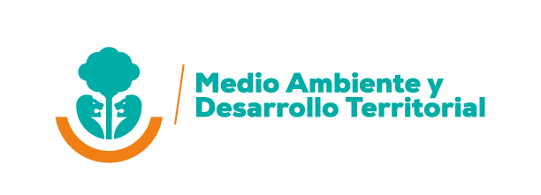

José Alfredo
Rodríguez Zapata
Doctor en Investigación Educativa · Jalisco, México
Ayudo a profesionistas a transformar su forma de trabajar mediante IA, sistematización metodológica y análisis de datos. Más de 20 años convirtiendo información compleja en decisiones claras y accionables
experiencia
OXFAM LAC
indexadas
Educativa
Sí soy
Si eres docente, investigador/a o profesionista… esto es para ti
No es falta de capacidad… es falta de sistema.
El problema no es la IA… es cómo la estás usando. La mayoría:
Aquí harás algo distinto:
Aprendes un sistema claro para usar IA en tu trabajo real.
La IA no va a reemplazarte…
Pero alguien que la use mejor que tú, sí.
¿En qué puedo ayudarte?
Servicios especializados para organismos internacionales, instituciones académicas y sectores público y privado.
Consultoría Internacional
Diseño y ejecución de consultorías técnicas para organismos como IICA, OXFAM y dependencias gubernamentales. Sistematización de procesos participativos, notas técnicas, guías metodológicas y productos de impacto.
DATA VIZ Cualitativa
Visualización de datos cualitativos como especialidad técnica diferenciadora. Triangulación de datos, matrices de análisis, esquemas conceptuales e infografías que convierten información compleja en productos aplicables.
Artículos & Acompañamiento en Titulación
Diseño y redacción de artículos para revistas indexadas (SCOPUS, WoS, Latindex). Humanización de textos con IA. También ofrezco acompañamiento integral en procesos de titulación de licenciatura, maestría y doctorado, integrando el uso ético y estratégico de la IA generativa en cada etapa.
Cursos de IA Aplicada
Formación práctica en inteligencia artificial generativa adaptada a cualquier sector: educación, salud, derecho, negocios y gobierno. Desde cero hasta nivel avanzado, con enfoque en productividad real y ética en el uso de IA.
José Alfredo
Rodríguez Zapata
ORCID: 0009-0004-9716-8834
23 años construyendo conocimiento que transforma
Soy Doctor en Investigación Educativa Aplicada por el ISIDM (Zapopan, Jalisco). Mi trabajo cruza la academia con la consultoría internacional, combinando rigor metodológico con productos que llegan a las personas e instituciones que los necesitan.
He colaborado con OXFAM Latinoamérica en investigación regional de 8 países, con IICA/SAIA en enfoques de juventudes para sistemas agroalimentarios de las Américas, y con el Gobierno de Jalisco en salvaguardas REDD+ para la acción climática.
- Sistematización metodológica y procesos participativos multi-actor
- Visualización de datos cualitativos [DATA VIZ] — especialidad técnica
- Investigación con juventudes, género e interseccionalidad
- Gobernanza ambiental — estándares REDD+, TREES/LEAF
- IA Generativa aplicada a investigación social y educación
- Acompañamiento en procesos de titulación (licenciatura, maestría, doctorado)
Visualización de Datos Cualitativos
Convierto procesos de investigación complejos en productos visuales claros, rigurosos y aplicables para equipos técnicos y no técnicos.
¿Qué tipos de DATA VIZ realizo?
Desde matrices de triangulación hasta guías metodológicas visuales, mis productos garantizan que la información compleja sea comprensible y lista para la toma de decisiones institucional.
Mi proceso de consultoría
Un flujo claro, transparente y orientado a resultados que garantiza productos de calidad internacional.
Diagnóstico inicial
Reunión virtual para entender tus necesidades, contexto institucional y términos de referencia.
Propuesta técnica y económica
Productos, cronograma, metodología y forma de pago por entregable, clara y detallada.
Diseño de instrumentos
Cuestionarios, guías de grupos focales y protocolos de entrevista adaptados a tu contexto.
Análisis y sistematización
Análisis cualitativo avanzado, triangulación de fuentes y síntesis conceptual rigurosa.
Visualización y redacción
DATA VIZ cualitativa: matrices, esquemas, infografías y productos listos para publicar.
Validación y entrega final
Retroalimentación iterativa para asegurar pertinencia, coherencia y satisfacción total.
Instituciones con las que he colaborado
"Investigador contribuyente en 'Rompiendo Moldes de la Violencia y Desigualdad en Latinoamérica' — investigación en 8 países con más de 4,700 encuestas, 47 grupos focales y 49 entrevistas."
"Consultoría para la incorporación del enfoque de juventudes e intergeneracional en proyectos de sanidad agropecuaria, inocuidad y calidad de los alimentos en las Américas."
"Implementación del Plan de Conformidad de Salvaguardas REDD+ del estado de Jalisco, en el marco del Estándar TREES de la Coalición LEAF."

SEMADET JaliscoDomina la IA y multiplica tu productividad en 5 semanas
Aprende a usar IA de forma estratégica para investigar, transformar y producir resultados profesionales con claridad, velocidad y precisión.
IA para Profesionales de la Educación
Planeación, evaluación, diseño de instrumentos y redacción académica potenciada con IA. Ideal para docentes, investigadores y directivos.
IA para Abogados y el Sector Legal
Redacción jurídica, análisis de contratos, síntesis de expedientes y productividad legal potenciada. Casos prácticos del ámbito jurídico.
IA en Salud y Ciencias Médicas
Redacción clínica, revisión de literatura, diseño de investigación. Ética y seguridad incluidas para todo el equipo de salud.
IA para Empresas y Gobierno
Productividad operativa, análisis de datos y comunicación institucional. Para equipos directivos, comunicación y gestión pública.
¿Tienes un proyecto en mente?
Disponible para consultorías internacionales, talleres, artículos y acompañamiento en titulación.